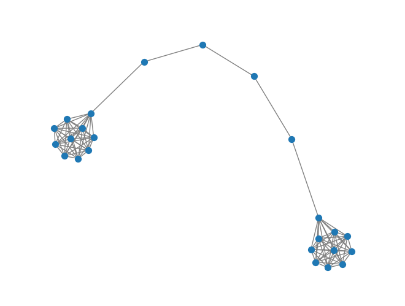
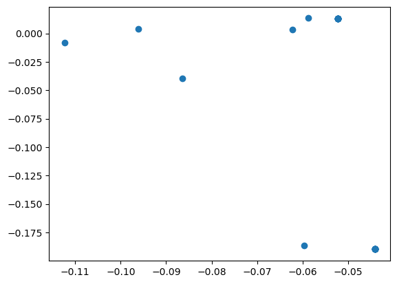
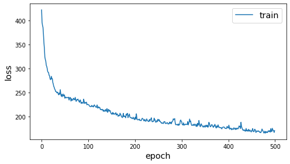

Unsupervised graph representation learning using Graph ConvNet#
In this notebook we will be performing unsupervised graph representation learning using Graph ConvNet as encoder.
The model embeds a graph by using stacked Graph ConvNet layers
#from networkx import karate_club_graph, to_numpy_matrix
import numpy as np
import networkx as nx
from scipy.linalg import sqrtm
import matplotlib.pyplot as plt
G = nx.barbell_graph(m1=10, m2=4)
order = np.arange(G.number_of_nodes())
A = nx.to_numpy_matrix(G, nodelist=order)
I = np.eye(G.number_of_nodes())
np.random.seed(7)
A_hat = A + np.eye(G.number_of_nodes()) # add self-connections
D_hat = np.array(np.sum(A_hat, axis=0))[0]
D_hat = np.array(np.diag(D_hat))
D_hat = np.linalg.inv(sqrtm(D_hat))
A_hat = D_hat @ A_hat @ D_hat
def glorot_init(nin, nout):
sd = np.sqrt(6.0 / (nin + nout))
return np.random.uniform(-sd, sd, size=(nin, nout))
class GCNLayer():
def __init__(self, n_inputs, n_outputs):
self.n_inputs = n_inputs
self.n_outputs = n_outputs
self.W = glorot_init(self.n_outputs, self.n_inputs)
self.activation = np.tanh
def forward(self, A, X):
self._X = (A @ X).T # (N,N)*(N,n_outputs) ==> (n_outputs,N)
H = self.W @ self._X # (N, D)*(D, n_outputs) => (N, n_outputs)
H = self.activation(H)
return H.T # (n_outputs, N)
gcn1 = GCNLayer(G.number_of_nodes(), 8)
gcn2 = GCNLayer(8, 4)
gcn3 = GCNLayer(4, 2)
H1 = gcn1.forward(A_hat, I)
H2 = gcn2.forward(A_hat, H1)
H3 = gcn3.forward(A_hat, H2)
embeddings = H3
def draw_graph(G, filename=None, node_size=50):
pos_nodes = nx.spring_layout(G)
nx.draw(G, pos_nodes, with_labels=False, node_size=node_size, edge_color='gray')
pos_attrs = {}
for node, coords in pos_nodes.items():
pos_attrs[node] = (coords[0], coords[1] + 0.08)
plt.axis('off')
axis = plt.gca()
axis.set_xlim([1.2*x for x in axis.get_xlim()])
axis.set_ylim([1.2*y for y in axis.get_ylim()])
embeddings = np.array(embeddings)
draw_graph(G)

plt.scatter(embeddings[:, 0], embeddings[:, 1])
plt.savefig('embedding_gcn.png',dpi=300)

Unsupervised GCN training using similarity graph distance#
For the next example, we need to install StellarGraph, the python library we will be using to build the model
# install StellarGraph
!pip install -q stellargraph[demos]==1.2.1
^C
WARNING: Retrying (Retry(total=4, connect=None, read=None, redirect=None, status=None)) after connection broken by 'ReadTimeoutError("HTTPSConnectionPool(host='pypi.org', port=443): Read timed out. (read timeout=15)")': /simple/stellargraph/
import pandas as pd
import numpy as np
import networkx as nx
import os
import stellargraph as sg
from stellargraph.mapper import FullBatchNodeGenerator
from stellargraph.layer import GCN
import tensorflow as tf
from tensorflow.keras import layers, optimizers, losses, metrics, Model
from sklearn import preprocessing, model_selection
from IPython.display import display, HTML
import matplotlib.pyplot as plt
%matplotlib inline
In this demo, we will be using the PROTEINS dataset, already integrated in StellarGraph
dataset = sg.datasets.PROTEINS()
display(HTML(dataset.description))
graphs, graph_labels = dataset.load()
Each graph represents a protein and graph labels represent whether they are are enzymes or non-enzymes. The dataset includes 1113 graphs with 39 nodes and 73 edges on average for each graph. Graph nodes have 4 attributes (including a one-hot encoding of their label), and each graph is labelled as belonging to 1 of 2 classes.
# let's print some info to better understand the dataset
print(graphs[0].info())
graph_labels.value_counts().to_frame()
StellarGraph: Undirected multigraph
Nodes: 42, Edges: 162
Node types:
default: [42]
Features: float32 vector, length 4
Edge types: default-default->default
Edge types:
default-default->default: [162]
Weights: all 1 (default)
Features: none
| label | |
|---|---|
| 1 | 663 |
| 2 | 450 |
Model definition#
It’s now time to build-up the model. StellarGraph offers several utility function to load and process the dataset, as well as define the GNN model and train.
# TODO
generator = sg.mapper.PaddedGraphGenerator(graphs)
# define a GCN model containing 2 layers of size 64 and 32, respectively.
# ReLU activation function is used to add non-linearity between layers
gc_model = sg.layer.GCNSupervisedGraphClassification(
[64, 32], ["relu", "relu"], generator, pool_all_layers=True
)
inp1, out1 = gc_model.in_out_tensors()
inp2, out2 = gc_model.in_out_tensors()
vec_distance = tf.norm(out1 - out2, axis=1)
pair_model = Model(inp1 + inp2, vec_distance)
embedding_model = Model(inp1, out1)
def graph_distance(graph1, graph2):
spec1 = nx.laplacian_spectrum(graph1.to_networkx(feature_attr=None))
spec2 = nx.laplacian_spectrum(graph2.to_networkx(feature_attr=None))
k = min(len(spec1), len(spec2))
return np.linalg.norm(spec1[:k] - spec2[:k])
graph_idx = np.random.RandomState(0).randint(len(graphs), size=(100, 2))
targets = [graph_distance(graphs[left], graphs[right]) for left, right in graph_idx]
train_gen = generator.flow(graph_idx, batch_size=10, targets=targets)
pair_model.compile(optimizers.Adam(1e-2), loss="mse")
history = pair_model.fit(train_gen, epochs=500, verbose=0)
sg.utils.plot_history(history)

embeddings = embedding_model.predict(generator.flow(graphs))
from sklearn.manifold import TSNE
tsne = TSNE(2)
two_d = tsne.fit_transform(embeddings)
plt.scatter(two_d[:, 0], two_d[:, 1], c=graph_labels.cat.codes, cmap="jet", alpha=0.4)
plt.savefig('embedding_TSNE.png',dpi=300)